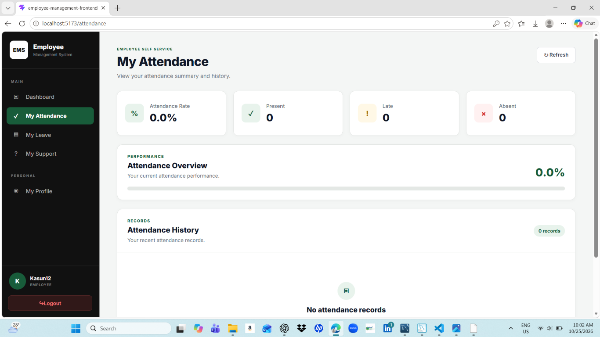
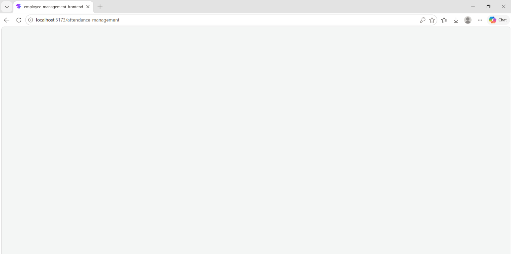

A practical walkthrough of what the application does, how the important features work, and where to find the code.
A full-stack HR workflow app with administrator and employee roles, built with React, Spring Boot, MySQL, and JWT security.
Prepared for: Internship interview practice
Use fictional demo accounts and data. Do not show passwords, access tokens, or employee personal details.
Project root:C:\Users\MALSHI\OneDrive - NSBM\Desktop\My Employee Management System\employee-management-system
This application brings employee account management and basic HR workflows into one web app. Administrators manage employee records and requests; employees use self-service pages for their own information.
| Layer | Technology | Purpose |
|---|---|---|
| Frontend | React, JSX, React Router | UI components, page state, and navigation. |
| HTTP client/build | Axios, Vite, ESLint | API calls, local dev/production build, linting. |
| Backend | Java 25, Spring Boot, Spring Web | REST endpoints and application services. |
| Persistence | Spring Data JPA, Hibernate, MySQL | Mapping entities and saving application data. |
| Security | Spring Security, JWT, BCrypt | Authentication, role checks, password hashing. |
| Tests | H2, Maven Wrapper | Repeatable backend tests without local MySQL. |
/api/... endpoint and attaches the bearer token for protected calls.| Term | Simple explanation |
|---|---|
| Authentication | Establishing who the user is. |
| Authorization | Checking what that user is allowed to do. |
| Controller | Maps HTTP requests to application operations and responses. |
| Service | Holds workflow/application logic. |
| Repository | Provides data access operations. |
| Entity | Java representation of persisted data/table. |
| DTO | Defines the data received from or returned to the API client. |
These are the screenshots shared during troubleshooting. They show the state at that time, not a guarantee of the current build or data.

| File (repository-relative) | Added or changed | What it does |
|---|---|---|
frontend/src/components/AttendanceManagement.jsx | Added | Admin screen: date selection, employee search, status selection, save action, daily counts. |
frontend/src/components/AttendanceManagement.css | Added | Styles the admin attendance screen. |
frontend/src/App.jsx | Changed | Registers the /attendance-management page route. |
frontend/src/components/Sidebar.jsx | Changed | Adds an admin Attendance menu item. |
backend/.../controller/AttendanceController.java | Changed | Adds admin-only date-filtered GET; existing POST saves attendance. |
backend/.../service/AttendanceService.java | Changed | Loads attendance records for a chosen date; save-or-update logic is reused. |
backend/.../repository/AttendanceRepository.java | Changed | Adds lookup by date. |
backend/.../dto/AttendanceRequestDto.java | Changed | Validates required fields, positive employee ID, and non-future date. |
backend/src/test/.../EmployeeManagementApplicationTests.java | Changed | Contains backend integration tests, including attendance workflows. |
GET /api/users and GET /api/attendance?date=....{userId, date, status} to POST /api/attendance.GET /api/attendance/me.
| File | Purpose |
|---|---|
README.md (repository root) | Project overview, local setup, tests, API, security and interview documentation links. |
DEPLOYMENT.md | Documents deployment. |
docs/INTERVIEW_DEMO.md | Short live demo plan and checklist. |
docs/INTERVIEW_PREPARATION.md | Project introduction, technology explanations, common questions, practice plan. |
docs/INTERVIEW_PROJECT_WALKTHROUGH.md | Source notes for this PDF. |
docs/INTERVIEW_PROJECT_WALKTHROUGH.pdf | Printable copy of this walkthrough. |
docs/interview-images/ | Copies of the two attendance troubleshooting screenshots used in this guide. |
AttendanceManagement.jsx.Could not resolve placeholder 'JWT_SECRET' in value "${JWT_SECRET}". This is the immediate startup problem: the backend requires a JWT signing secret.Use your own local MySQL username/password; ensure MySQL is running and the database exists. Set these in the same PowerShell window before running Spring. A new terminal has a fresh environment. Never share or commit secrets.
JWT_SECRET placeholder: set the generated secret above.